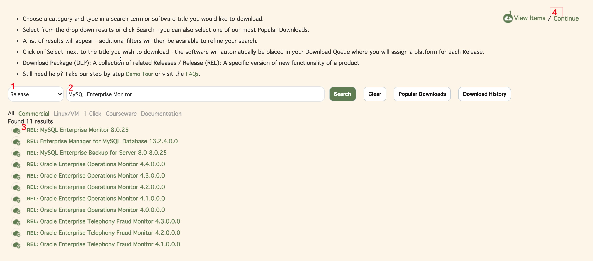

本方案用到了MySQL企业版的监控管理，请自行决定是否存在商业版授权的问题。
架构上分为两个部分：
- Service Manager（监控管理后台）
- Monitor Agent（采集器）运行在MySQL服务器上
下载软件
访问 https://edelivery.oracle.com/ ，需要登录，可自行注册账号。
搜索 MySQL Enterprise Monitor，根据下图的顺序点击：

选择Linux x86-64 平台，然后下一步：

阅读授权，然后下一步：

可以点击文件名直接浏览器下载，也可以点击Download下载一个下载器，然后再下载：

文件说明
两个文件下载完之后，解压缩，你可以看到一些文档文件和几个可执行文件（bin文件）：
- mysqlmonitor-8.0.25.1328-linux-x86_64-installer.bin
- mysqlmonitor-8.0.25.1328-linux-x86_64-update-installer.bin
- mysqlmonitoragent-8.0.25.1328-linux-x86-64bit-installer.bin
- mysqlmonitoragent-8.0.25.1328-linux-x86-64bit-update-installer.bin
首次安装只需要*-installer.bin就可以了，如果是对已有安装的升级需要*-update-installer.bin。这里讲的是首次安装。
安装Service Manager
找任意一台服务器，把mysqlmonitor-8.0.25.1328-linux-x86_64-installer.bin传上去，然后安装：
1
2
3
4
5
6
7
8
9
10
11
12
13
14
15
16
17
18
19
20
21
22
23
24
25
26
27
28
29
30
31
32
33
34
35
36
37
38
39
40
41
42
43
44
45
46
47
48
49
50
51
52
53
54
55
56
57
58
59
60
61
62
63
64
65
66
67
68
69
70
71
72
73
74
75
76
77
78
79
80
81
82
83
84
85
86
87
88
89
90
91
92
93
94
95
96
97
98
99
100
101
102
103
104
105
106
107
108
109
110
111
112
113
114
115
116
117
118
119
120
121
122
123
124
125
126
127
128
129
130
|
$ ./mysqlmonitor-8.0.25.1328-linux-x86_64-installer.bin --mode text
Language Selection
Please select the installation language
[1] English - English
[2] Japanese - 日本語
[3] Simplified Chinese - 简体中文
Please choose an option [1] : 3 <选择3>
信息: 安装过程中要求您输入 Enterprise Monitor 使用的多个用户名和密码。请将这些密码保存至安全场所，以备恢复使用。
按 [Enter] 继续：<回车>
----------------------------------------------------------------------------
欢迎使用 MySQL Enterprise Monitor 安装向导
----------------------------------------------------------------------------
请指定 MySQL Enterprise Monitor 的安装目录
安装目录 [/home/ubuntu/mysql/enterprise/monitor]: <回车>
----------------------------------------------------------------------------
Select Requirements
选择要求
请指明监视范围，安装初始过程中将相应地配置内存使用。注意: 该设置对性能有极大影响。手册中包含相关内容，如有需要，您可以之后更新该配置。该安装将监视:
系统容量
[1] 小型系统: 使用笔记本电脑或不超过4GB内存的低档服务器监视 1 至 5 个 MySQL 服务器
[2] 中型系统: 使用一个共享4 GB 到8 GB内存的中型服务器上监视多达100个 MySQL 服务器
[3] 大型系统: 使用超过8 GB内存的 MEM 专用服务器监视超过100个 MySQL 服务器
请选择选项 [2] : 1 <选择1>
----------------------------------------------------------------------------
Tomcat 服务器选项
请为绑定的 Tomcat 服务器指定以下参数
Tomcat 服务器端口 [18080]: <回车>
Tomcat SSL 端口 [18443]: <回车>
----------------------------------------------------------------------------
安装数据库
请选择希望配置使用的数据库
[1] 使用 MEM 绑定的 MySQL 数据库
[2] 使用既存的 MySQL 数据库 *
请选择选项 [1] : <回车>
* 在安装过程中将验证既存 MySQL 数据库的版本. 查阅文档获取最低版本要求信息。
* 重要: 如果您的既存 MySQL 数据库中已经存在了另一个 MySQL Enterprise Monitor
存储库，继续保留该存储库，请在下一个画面的"MySQL Database Name"区域内指定一个唯一名称。
访问下记 URL 获取更多信息:
http://dev.mysql.com/doc/mysql-monitor/8.0/en/mem-install-server.html
----------------------------------------------------------------------------
配置存储库
请指定 bundled MySQL 服务器的下记参数
存储库用户名称 [service_manager]: <回车>
密码 : <输入密码>
再次输入 : <输入密码>
MySQL 数据库端口 [13306]: <回车>
MySQL 数据库名称 [mem]: <回车>
----------------------------------------------------------------------------
配置报告
没有使用root用户安装 MySQL Enterprise Monitor。因此无法配置为重启后自动运行。参阅 MySQL Enterprise Monitor
文档的安装部分获得手动安装的详细信息
按 [Enter] 继续：<回车>
----------------------------------------------------------------------------
准备安装 MySQL Enterprise Monitor 至您的计算机。
您确定要继续吗？ [Y/n]: <回车>
----------------------------------------------------------------------------
正在安装 MySQL Enterprise Monitor 至您的电脑中，请稍候。
正在安装
0% ______________ 50% ______________ 100%
#########################################
----------------------------------------------------------------------------
完成安装文件
完成 MySQL Enterprise Monitor 安装文件在您的计算机
卸载 MySQL Enterprise Monitor 文件调用:
/home/ubuntu/mysql/enterprise/monitor/uninstall
完成安装，启动 MySQL Enterprise Monitor 监视面板并完成初始配置。请参阅自述文件以获得更多信息和已知问题列表。
按 [Enter] 继续： <回车>
----------------------------------------------------------------------------
完成安装文件
警告: 为提升安全性，与服务管理器的通信采用
SSL。因为在安装服务管理器时包含基本的自签署安全证书，所以您的浏览器很可能会显示一个关于不可信连接的警告。请安装您自己的证书或为服务管理器的 URL
添加一个安全例外。查阅文档获取更多信息。
http://dev.mysql.com/doc/mysql-monitor/8.0/en/mem-ssl-installation.html
按 [Enter] 继续： <回车>
----------------------------------------------------------------------------
安装程序已经将 MySQL Enterprise Monitor 安装于您的电脑中。
查看自述文件 [Y/n]: <回车>
信息: 配置 MySQL Enterprise Monitor 请访问下记页面: https://localhost:18443
按 [Enter] 继续：<回车>
|
访问https://<ip>:18443，初始化配置一下Service Monitor：
- 设置 manager 角色的账号，以后访问Service Manager就用它
- 设置 agent 角色的账号，之后 Agent 和 Service Manager通信的时候，需要使用这个账号
- 设置数据保留期，根据情况自行设置
- 关闭自动在线检查更新
- 完成设置
然后你会进入首页，提示你设置时区和语言：

安装Agent
上传mysqlmonitoragent-8.0.25.1328-linux-x86-64bit-installer.bin到MySQL服务器，然后安装：
1
2
3
4
5
6
7
8
9
10
11
12
13
14
15
16
17
18
19
20
21
22
23
24
25
26
27
28
29
30
31
32
33
34
35
36
37
38
39
40
41
42
43
44
45
46
47
48
49
50
51
52
53
54
55
56
57
58
59
60
61
62
63
64
65
66
67
68
69
70
71
72
73
74
75
76
77
78
79
80
81
82
83
84
85
86
87
88
89
90
91
92
93
94
95
96
97
98
99
100
101
102
103
104
105
106
107
108
109
110
111
112
113
114
115
116
117
118
119
120
121
122
123
124
125
126
127
128
129
130
131
132
133
134
135
136
137
138
|
$ ./mysqlmonitoragent-8.0.25.1328-linux-x86-64bit-installer.bin --mode text
Language Selection
Please select the installation language
[1] English - English
[2] Japanese - 日本語
[3] Simplified Chinese - 简体中文
Please choose an option [1] : 3 <选择3>
----------------------------------------------------------------------------
欢迎使用 MySQL Enterprise Monitor Agent 安装向导。
----------------------------------------------------------------------------
安装目录
请指定 MySQL Enterprise Monitor Agent 安装位置
安装目录 [/home/ubuntu/mysql/enterprise/agent]: <回车>
agent 连接方式？
[1] TCP/IP
[2] Socket
请选择选项 [1] : <回车>
----------------------------------------------------------------------------
监视选项
您可以配置 Agent 用于监视主机。(文件系统， CPU， RAM， 等等。) 使用监视面板为当前或之后运行的 MySQL 实例提供连接参数。
Agent所识别的每个实例可以自动或手动进行添加。(注意: Windows上无法提供运行中MySQL的进程扫描功能，
但是您可以通过监视面板手动添加连接和参数。)
访问下记 URL 获取更多信息:
http://dev.mysql.com/doc/mysql-monitor/8.0/en/mem-qanal-using-feeding.html
监视选项:
[1] 仅主机: 配置 Agent 去监视主机并使用监视面板为当前或之后运行的 MySQL 实例提供连接参数。
[2] 主机和数据库: 配置 Agent 去监视主机并为指定的 MySQL 实例提供连接参数。 该过程可以脚本化。一旦安装， Agent 将持续寻找新的MySQL实例并监视。
请选择选项 [2] : <回车>
----------------------------------------------------------------------------
准备将 MySQL Enterprise Monitor Agent 安装至您的计算机。
您确定要继续吗？ [Y/n]: <回车>
----------------------------------------------------------------------------
请等待安装 MySQL Enterprise Monitor Agent 至您的计算机。
正在安装
0% ______________ 50% ______________ 100%
#########################################
----------------------------------------------------------------------------
MySQL Enterprise Monitor 选项
主机名称或 IP 地址 []: <输入Service Manager的IP>
Tomcat SSL 端口 [18443]: <回车>
Agent使用下记用户名称和密码连接到 Monitor。它们在您安装 Monitor 时定义，可以在设置里面修改， 管理用户。它们的角色定义为 "agent"。
Agent 用户名称 [agent]: <回车> <这里用到的就是之前配置的Agent角色的账号>
Agent 密码 : <agent账号密码>
再次输入 : <agent账号密码>
----------------------------------------------------------------------------
监视数据库配置选项
验证主机名称，端口，和管理账户权限 [Y/n]: <回车>
配置用户账户加密 [y/N]: <回车>
配置少权限用户账户 [y/N]: <回车>
----------------------------------------------------------------------------
监视对象数据库的信息
重要: 以下管理用户需要特别的 MySQL 权限。
访问下记 URL 获取更多信息:
http://dev.mysql.com/doc/mysql-monitor/8.0/en/mem-agent-rights.html
MySQL 主机名称或 IP 地址 [localhost]:
MySQL 端口 [3306]: <回车>
管理用户 []: root
管理密码 : <root账号密码>
再次输入密码 : <root账号密码>
监视组 []: <回车>
----------------------------------------------------------------------------
配置报告
MySQL Enterprise Monitor Agent (Version 8.0.25.1328)
指定的设置如下
注意使用连接器收集查询分析器数据，
您需要一些设置去配置连接器。 参照
下记信息:
http://dev.mysql.com/doc/mysql-monitor/8.0/en/mem-qanal-using-feeding.html
安装目录: /home/ubuntu/mysql/enterprise/agent
MySQL Enterprise Monitor UI:
-------------------------
主机名称或 IP 地址: <...>
Tomcat Server 端口: 18443
使用 SSL: yes
监视 MySQL 数据库:
-------------------------
主机名称或 IP 地址: localhost
端口: 3306
按 [Enter] 继续： <回车>
----------------------------------------------------------------------------
启动 MySQL Enterprise Monitor Agent
启动 MySQL Enterprise Monitor Agent 信息
MySQL Enterprise Monitor Agent 成功安装。启动 Agent 请调用:
/home/ubuntu/mysql/enterprise/agent/etc/init.d/mysql-monitor-agent start
按 [Enter] 继续： <回车>
----------------------------------------------------------------------------
已在您的计算机完成安装 MySQL Enterprise Monitor Agent 。
|
然后启动Agent：
1
2
|
$ /home/ubuntu/mysql/enterprise/agent/etc/init.d/mysql-monitor-agent start
Starting MySQL Enterprise Agent service...
|
在Service Manager上查看
如果一切正常，那么你可以在Service Manager上看到两个MySQL实例：

- xxxx:3306 是刚才安装的Agent所在的实例
- xxxx:13306 则是Service Monitor自己用的MySQL的实例
文档
https://dev.mysql.com/doc/mysql-monitor/8.0/en/preface.html
评论